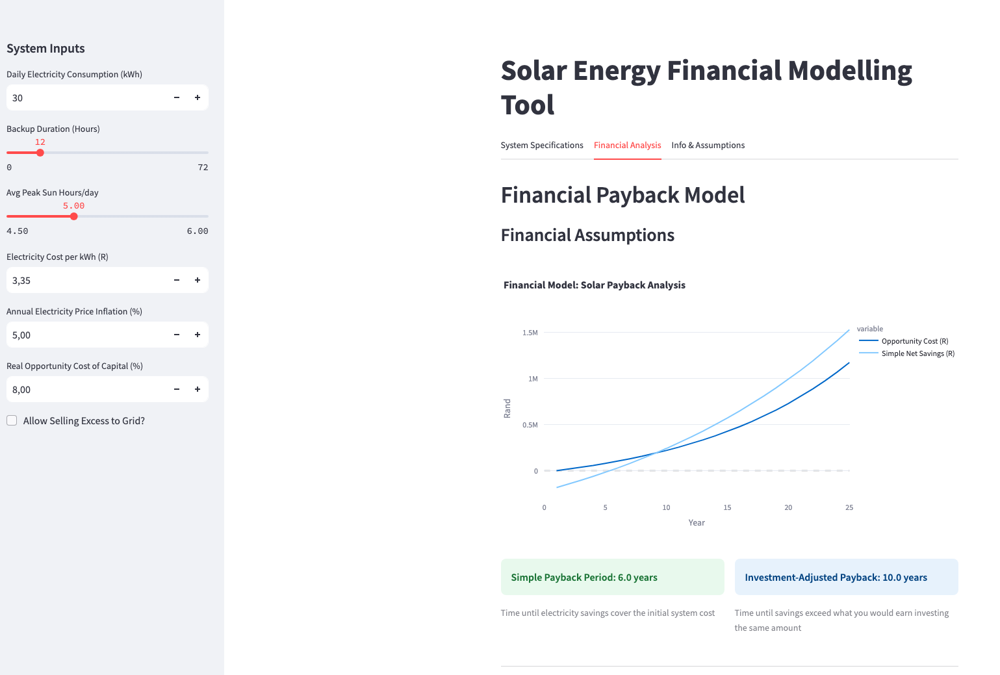

DRAFT: Analysis for a Solar PV & Battery System (South Africa)
I asked GPT-4.5 with deep research to investigate a solar system for me, in order to test its capabilities, inspired by a post by Timothy B. Lee titled in a somewhat clickbait manner, These experts were stunned by OpenAI Deep Research. I was interested to read that the experts Timothy consulted were impressed with the domain specific knowledge shown by the model, searching widely across the web for information to answer the expert’s questions ranging from law to coding, to construction.
Much like my post on public transport between airports and city centers, as each new iteration of LLM is announced, I have asked the models to investigate quite a complex domestic engineering problem; specifying a solar system for a house in South Africa, and creating a mechanism to calculate the payback time of the system.
This post details the output that I received from GPT 4.5 Deep Research, and the analysis of the solar system that it proposed.
I would really love some feedback on the Streamlit application that it built, so please do comment on the LinkedIn post (when it is up).

Prompt
Following Tobias Zwingmann’s guide to prompting Large Language Models, I provided the following prompt to GPT-4.5:
Role: you’re an expert on domestic solar energy systems.
Goal: I want you to conduct some research for me, and write an engineering report. I am trying to decide on a solar panel and battery system to install in my freestanding house in South Africa.
Tasks: There are a few considerations;
I need to understand the size of the system I need to run everything electric in my house, except water heating and air conditioning,
I need to understand what the lifespan of the system will be,
Using this, I need to understand how long the payback period would be, considering the cost of installing the system, the savings on electricity while the system is in use, and the opportunity cost of that money invested in a high-yield savings account.
Details: Say that I live in a house that has a roof conducive to installing panels, that I pay a per kilowatt rate for my electricity from the grid and that I cannot sell back to the grid at the moment.
Response
Here is the response I received:
Introduction
This report presents an engineering analysis for a solar panel and battery system to power a freestanding house in South Africa. The homeowner’s goal is to supply 30 kWh of electricity per day and have 48 hours (2 days) of backup power for outages. The system will be grid-connected (for reliability) but excess solar energy cannot be fed back into the grid. All components are selected for efficiency and cost-effectiveness within a budget of R200,000. We outline the system sizing (solar panels, battery bank, inverter), component lifespans, and a financial analysis including payback period, electricity bill savings, and the opportunity cost of capital (at 2% above inflation).
Load Requirements and Backup Capacity
Daily Energy Usage: The average daily consumption is 30 kWh, which is in line with Eskom’s estimate of ~30 kWh for a typical household (Load-Shedding Solutions | What Size Backup Battery Do I Need? - REVOV Battery Backup Power Solutions). This includes all household loads (lighting, appliances, etc.). To be fully self-sufficient on solar, the system must generate roughly this amount each day on average.
Backup for 48 Hours: To power the home for 2 full days of autonomy (30 kWh/day × 2 days), approximately 60 kWh of usable energy storage is required if there were no solar input. In practice, during a daytime outage the solar panels will still produce power (if the sun is shining) to help supply loads and recharge the batteries. However, the battery bank must be sized to carry the house through two nights and periods of low sun. We will design for ~60 kWh usable storage, which means a slightly higher nominal battery capacity when accounting for depth-of-discharge limits (explained below).
Power (kW) Requirements: In addition to energy (kWh), the system must handle the peak power draw of the home. A rough estimate for a typical family home with major appliances might be 5–8 kW peak load (higher if electric stoves or multiple air-cons run simultaneously). The inverter and panel array should be sized to comfortably supply this peak. We will target an inverter around 8–10 kVA to ensure the system can deliver sufficient power for typical household loads without bottleneck.
Solar PV Array Sizing
Energy Production Goal: To produce ~30 kWh per day from solar, we estimate the required PV capacity based on local solar irradiance. South Africa has good sunshine; assuming an average of about 5 peak-sun-hours per day, a 1 kW solar array can produce roughly 5 kWh per day. Thus, to generate ~30 kWh/day, about 6 kW_p (kilowatts peak) of panels are needed (30 kWh ÷ 5 kWh/kW ≈ 6 kW). In practice, we will oversize slightly to account for losses (inefficiencies, cloudy days, winter).
Recommended PV Size: 8 kW_p solar array – for example, ~20 panels of 400 W each. This size can produce on the order of 35–40 kWh on a good sunny day, providing a buffer to both run the house and charge the battery bank. (By comparison, a professionally designed off-grid system yielding ~42 kWh/day uses ~7.92 kW of panels (Off grid solar kit | 10kVA inverter 7.92kWp 32kWh lithium).) The 8 kW array ensures that even in winter or overcast conditions, there is a better chance to meet the 30 kWh load or at least partially recharge batteries. It also allows quick recharging of the 60 kWh battery after a prolonged outage, when the sun returns.
Panel Type and Installation: We recommend high-efficiency monocrystalline PV panels (60 or 72-cell modules). These typically have 300–450 W output each; using ~72-cell (larger) panels reduces the number of modules needed (What You Need for an Off-Grid Solar System in South Africa - REVOV Battery Backup Power Solutions). Panels should be mounted on a north-facing roof (in the southern hemisphere) at an optimal tilt to maximize year-round solar exposure (What You Need for an Off-Grid Solar System in South Africa - REVOV Battery Backup Power Solutions). No specific brand is required; Tier-1 manufacturers (e.g. JA Solar, Trina, Jinko, Canadian Solar, etc.) offer similar efficiency (~18–21%) and reliability, so the focus is on cost-effective per-watt pricing and good warranty terms.
Performance and Efficiency: The array will feed a MPPT (maximum power point tracking) charge controller or hybrid inverter, which manages the DC power from panels. Modern MPPT-enabled systems can achieve >95% conversion efficiency of solar DC to battery storage or AC output. Some energy losses (maybe ~10-15%) are expected in cabling, controller, and inverter, which have been factored into the slight oversizing. The system should be designed such that during the day, solar directly powers the house and any surplus goes into charging the battery. Since export to the grid is not allowed, once the battery is full any further excess generation will be curtailed (essentially “wasted”). Thus, 8 kW_p is a reasonable compromise: large enough to meet needs but not so large that huge excesses occur regularly. In summer months there may be some midday surplus when the battery is full and loads are low; in winter, the array size will be just sufficient to cover usage on many days.
Battery Storage System
Required Capacity: For a full 48-hour backup of 30 kWh/day, we target about 60 kWh of usable storage. To achieve 60 kWh usable, the battery’s total capacity should be larger because it’s neither practical nor healthy for batteries to be fully discharged to 0%. Using a Lithium-ion (LiFePO₄) battery bank, we can safely discharge up to ~80–90% of the battery. Assuming ~80% Depth of Discharge (DoD) for longevity, the total installed battery capacity should be around:
[ = ]
This ensures 60 kWh is available without pushing the battery to absolute empty. In an emergency outage, the system could go deeper if needed, but designing for 80% DoD gives a margin and extends battery life (Load-Shedding Solutions | What Size Backup Battery Do I Need? - REVOV Battery Backup Power Solutions) (LiFePO4 Battery Cycle Life & Durability).
Battery Type: We recommend Lithium Iron Phosphate (LiFePO₄) batteries. LiFePO₄ is widely used in solar applications for its long life and safety. Compared to traditional lead-acid batteries, lithium batteries offer: higher usable depth of discharge, more cycle life, no required maintenance (no topping up acid), no gas emissions, lighter weight, and better charge efficiency (What You Need for an Off-Grid Solar System in South Africa - REVOV Battery Backup Power Solutions). They also can charge faster and don’t need to be fully recharged each cycle (What You Need for an Off-Grid Solar System in South Africa - REVOV Battery Backup Power Solutions). While upfront cost per kWh is higher than lead-acid, the longevity and usable capacity make them more cost-effective over the system life. A typical Li-ion solar battery comes with a 10-year warranty and >5,000 cycle lifespan (What You Need for an Off-Grid Solar System in South Africa - REVOV Battery Backup Power Solutions) (LiFePO4 Battery Cycle Life & Durability). For example, good quality LiFePO₄ batteries can exceed 5,000 cycles at 80% DoD (LiFePO4 Battery Cycle Life & Durability), which equates to roughly 13–15 years of daily cycling. This far outlives lead-acid banks, which might only get a few hundred deep cycles before needing replacement.
Battery Bank Configuration: ~75 kWh is a very large battery bank. In practice, this would be built by connecting multiple modular battery units in parallel. Many LiFePO₄ solar batteries come in 5 kWh or 10 kWh modules (often 48V each). For instance, the system could use around five 15 kWh modules, or seven to eight 10 kWh modules, etc., connected to total ~75 kWh. This modular approach also allows some scalability – the homeowner could start with a bit less capacity if needed for budget, then add modules later (since lithium systems are easy to scale as needed (What You Need for an Off-Grid Solar System in South Africa - REVOV Battery Backup Power Solutions)).
Cost-Effective Options: There are South African brands and products that provide large LiFePO₄ batteries at competitive prices. For example, Freedom Won (a SA manufacturer) offers high-capacity LiFePO₄ batteries (their “Freedom Lite” 48V units) – a 32 kWh usable unit (40 kWh nominal) with 10-year warranty is one such model (Off grid solar kit | 10kVA inverter 7.92kWp 32kWh lithium). Pylontech (a popular brand) provides 3.5 kWh modules that can be stacked; though many would be needed for 60+ kWh, they are known for reliability. Second-life EV batteries are another cost-saving option: companies repurpose electric vehicle battery packs for home storage at lower cost per kWh (with somewhat reduced lifetime). Given the budget constraint, exploring a reputable second-life lithium battery supplier could significantly cut costs while still providing the required capacity.
Operating Strategy: Normally, the battery will charge from solar during the day and discharge at night to supply the home. This achieves maximum self-consumption of solar energy (since no selling back). The system can be configured such that the battery prioritizes critical loads during outages, extending its effective backup time. For example, during a long outage, heavy non-essential loads (pool pumps, laundry heaters, etc.) can be turned off to conserve power, allowing essential loads to run for 48 hours or more. A 60 kWh usable battery could theoretically power all 30 kWh/day usage for 2 days, but prudent load management during outages will provide a buffer (e.g. a 10 kWh battery can last 2–3 days for very basic needs (Load-Shedding Solutions | What Size Backup Battery Do I Need? - REVOV Battery Backup Power Solutions)). Our design ensures that in normal operation, the battery is cycled moderately (not 100% every day unless needed) to prolong its life.
Inverter and Balance of System Components
Hybrid Inverter/Charger: A hybrid inverter is required to tie everything together. This device inverts DC power from the panels/battery to AC for household use, and can also charge the batteries from either solar or grid when needed. A unit in the 8–10 kVA range is appropriate to handle the home’s peak loads. For example, a 10 kVA (8 kW) inverter was used in a reference off-grid system for ~42 kWh/day consumption (Off grid solar kit | 10kVA inverter 7.92kWp 32kWh lithium), which aligns well with our needs. Good brands include Victron (high-end), Sunsynk, GoodWe, SMA, and Deye among others – many offer integrated solutions that combine an MPPT solar charge controller, battery management, and grid transfer switching in one device (What You Need for an Off-Grid Solar System in South Africa - REVOV Battery Backup Power Solutions). This simplifies installation and provides seamless switchover to battery during outages (uninterruptible power supply function).
The inverter should output 230V AC, 50 Hz to match the South African grid. It also serves as the system’s brains: managing battery charge, preventing over-discharge, and throttling solar input if the battery is full and grid export is disallowed. Modern inverters operate at high efficiency (~95–98% conversion efficiency) and produce a pure sine-wave AC output. A quality inverter will have smart controls (often with a web/app interface to monitor performance and configure settings).
Charge Controller: If the chosen inverter does not have built-in MPPT, a separate solar charge controller would be needed. This device ensures the panels charge the battery optimally, adjusting voltage/current and preventing overcharge (What You Need for an Off-Grid Solar System in South Africa - REVOV Battery Backup Power Solutions). In our case, many hybrid inverters include MPPT functionality sized for the PV array, so we assume an all-in-one unit. The charge controller (standalone or inside inverter) will be sized for the array current – for 8 kW PV, that might be ~2 x 100A MPPTs (if split into strings), or one larger MPPT that can handle ~150–170 A input at battery voltage.
Other Equipment: The system also requires balance-of-system components: mounting racks for panels, wiring, combiner boxes and disconnects, fuses/breakers, and a battery management system (BMS) (the BMS is typically integrated with lithium batteries, ensuring cells are balanced and protecting from over/under-charge). Safety features include surge protection and earth leakage protection. Given the scale of the battery, a proper enclosure or battery room is needed (lithium batteries don’t emit gas, so no special ventilation is needed (What You Need for an Off-Grid Solar System in South Africa - REVOV Battery Backup Power Solutions), but temperature should be kept moderate for longevity).
Component Lifespans: The solar panels are very long-lived – most carry 25-year performance warranties and can last 25–40 years (What You Need for an Off-Grid Solar System in South Africa - REVOV Battery Backup Power Solutions). After 25 years a panel typically still produces ~80% of its original output. Lithium battery banks have a lifespan on the order of 10–15 years under daily cycling (with warranties ~10 years) (What You Need for an Off-Grid Solar System in South Africa - REVOV Battery Backup Power Solutions). After that, the capacity might drop to ~70-80% of original, at which point the homeowner might replace or augment the battery. The inverter is often the limiting component – good inverters last about 10 to 15 years (What You Need for an Off-Grid Solar System in South Africa - REVOV Battery Backup Power Solutions), so it may require one replacement over a 25-year project span. Smaller components (charge controllers, etc.) should also last 10+ years if they are high quality. Regular maintenance is minimal for this setup: cleaning panels occasionally, and possibly replacing cooling fans or checking connections on the inverter. The lack of moving parts in panels and the maintenance-free nature of LiFePO₄ batteries keep ongoing upkeep low.
Financial Analysis
Investing in this solar-plus-battery system has significant upfront costs but yields long-term savings on electricity bills and protection from load-shedding. Below we break down the financial outlook:
Upfront Cost Estimate (R): The budget is R200,000 (approximately $11,000). This needs to cover equipment and installation. Based on current market prices in South Africa, this budget is realistic for a 25–30 kWh/day off-grid-capable system (What You Need for an Off-Grid Solar System in South Africa - REVOV Battery Backup Power Solutions), though it requires careful component choices. For context, a typical 25 kWh/day off-grid setup with batteries costs around R200k–R250k installed (What You Need for an Off-Grid Solar System in South Africa - REVOV Battery Backup Power Solutions). Our system is slightly larger (30 kWh/day and more storage), so cost optimization is key (e.g., choosing a slightly smaller initial battery or competitive suppliers). A possible allocation of the budget could be:
- ~R80,000 for 8 kW of solar panels (at ~R10/W including mounting hardware),
- ~R100,000 for ~60 kWh of battery storage (this assumes ~R1,600 per kWh, which might involve second-life batteries or a good bulk deal),
- ~R20,000 for a hybrid inverter and balance-of-system (some inverter models in the 8kW range cost ~R15k–R30k).
These are rough figures and prices vary, but it shows achieving the system near R200k is feasible. If premium brand batteries/inverter are chosen, costs could exceed the budget (and one might opt for ~40 kWh battery initially to stay under budget, accepting a bit less than 48h backup except for essential loads).
Electricity Bill Savings: With solar supplying ~30 kWh each day, the homeowner will purchase far less energy from the grid. At the given grid tariff of R3.35 per kWh, 30 kWh/day corresponds to R100.5 per day avoided cost. Over a year, that is about R36,700 per year in savings (30×R3.35×365). In practice, the savings could vary: if occasional bad weather forces some grid use, the savings might be slightly lower; conversely, if electricity prices inflate, the monetary savings increase. Importantly, these savings assume all solar energy is self-consumed (which our design facilitates by storing excess in the battery for night use). Since no excess can be sold, we sized the system such that generation roughly matches usage to maximize utilization. Any small surplus solar (when the battery is full on a sunny day) is “lost” because it cannot be exported – but this is a minor sacrifice for ensuring enough capacity for cloudy days.
Payback Period (Simple): The simple payback time can be estimated as the initial cost divided by annual savings. Using R200,000 cost and ~R36,700/year savings, we get:
\[\text{Payback (no interest)} = \frac{R200,000}{R36,700/year} \approx 5.5 \text{ years}.\]
This means in roughly five and a half years, the cumulative electricity cost savings equal the upfront investment. This is a very favorable payback — notably, just a decade ago, solar systems had ~20-year paybacks, but with today’s high power costs and improved tech, payback times under 5–6 years are now achievable (Jozi home rental market is well set for an uptrend | Ennik Estates). In fact, reports indicate that a R200k solar-plus-battery system can pay for itself in “less than five years” under current conditions (Jozi home rental market is well set for an uptrend | Ennik Estates). Our calculation is in the same ballpark, and if grid electricity prices continue to rise faster than inflation (as has been the trend), the payback could accelerate further.
Considering Opportunity Cost: We also account for the opportunity cost of capital – the idea that the R200k could have been invested elsewhere. The homeowner expects a return of inflation + 2% if that money were invested. In real terms (assuming inflation-adjusted), that’s about a 2% real annual return. Factoring this in effectively means the solar investment should be compared to an alternative where the R200k earns ~R4,000 per year in real interest. When we account for this, the net benefit of the solar system each year is the electricity savings minus the forgone interest: approximately R36,700 – R4,000 = R32,700 per year. Using this net savings for payback gives:
\[\text{Payback (with 2\% cost of capital)} \approx \frac{R200,000}{R32,700/year} \approx 6.1 \text{ years}.\]
So, including opportunity cost, the payback is about 6 years. In other words, in 6 years the electricity savings not only recoup the R200k, but also compensate for the lost investment growth. Another way to see it: the internal rate of return (IRR) of the solar project is much higher than 2% – in fact, roughly on the order of 15–20% ROI when considering the annual savings vs cost, which far outstrips a modest 2% investment gain. Thus, even with conservative financial considerations, the solar system is a sound investment.
Long-Term Savings: After the payback period, the system will continue to save ~R36k+ per year (and likely more in nominal terms if utility rates rise). Over a 25-year lifespan of panels, the cumulative savings can be on the order of R1 million (not inflation-adjusted) if power tariffs increase. Of course, one must account for battery replacement costs around year 10–15 (which might be another R100k or so in future Rands, though future battery prices may drop). Even so, the net present value (NPV) remains strongly positive. Additionally, there are intangible benefits not monetized in the payback: the ability to keep the lights on and appliances running during Eskom load-shedding or outages. This resilience has value in avoiding lost productivity, spoiled food, or the need for alternative backup generators.
Conclusion
Recommended Solution: Deploy an ~8 kW solar PV array, a lithium-ion battery bank ~60 kWh usable (75 kWh nominal), and an 8–10 kVA hybrid inverter. This configuration can supply the home’s 30 kWh daily needs and provide approximately 48 hours of autonomy during grid outages. The system components were chosen for efficiency and longevity: Tier-1 PV modules (25-year life), a LiFePO₄ battery (10+ year life, >5000 cycles (LiFePO4 Battery Cycle Life & Durability)), and a quality inverter (10-15 year life). The design avoids feeding power to the grid, instead storing excess solar in batteries for nighttime use, thereby maximizing self-consumption. At an estimated cost of ~R200k (installed), the system fits the budget by using cost-effective equipment and possibly leveraging modular expansion.
Performance: Under typical sun conditions, the solar panels will produce around 30–40 kWh per day (Off grid solar kit | 10kVA inverter 7.92kWp 32kWh lithium), meeting the household demand and charging the battery to prepare for night or any outages. During an outage, the system can run critical loads for 2 days comfortably, and with sunlight each day, essential usage can be maintained even beyond 48 hours (especially if non-critical loads are managed). This ensures the homeowner is largely shielded from load-shedding disruptions.
Financial Return: The solar investment is financially attractive. With a ~5–6 year payback period from electricity savings, it yields a strong return compared to the modest 2% real growth of money in a bank. The savings on electricity bills (on the order of R35k per year) effectively start paying back from day one, and once the system is paid off, the continued savings are like tax-free dividends. Given that current payback periods in South Africa for similar systems are reported to be well under 5 years (Jozi home rental market is well set for an uptrend | Ennik Estates) (What You Need for an Off-Grid Solar System in South Africa - REVOV Battery Backup Power Solutions), this project is likely to recover its cost well within the components’ lifespan, even after accounting for battery replacement down the line.
In summary, the proposed solar PV and battery system is feasible within the R200k budget, meets the energy and backup requirements, and offers both economic and practical benefits. It will provide reliable power (with independence from grid outages) and long-term cost savings. The homeowner will enjoy peace of mind with a sustainable system that over its life will pay for itself and more.
Streamlit Application
The model also built a Streamlit application to help me calculate the payback time of the system. You can access the application here.
There are quite a number of assumptions that I still need to work through…